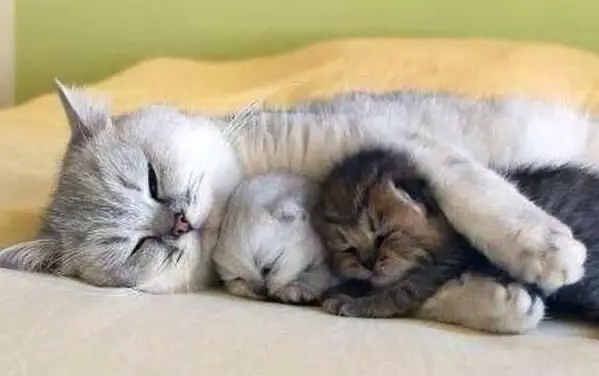

Beneficios de afoptar un gato
Adoptar un gato puede ser una experiencia sumamente gratificante por varios motivos, tanto prácticos como emocionales, entre los que se incluyen los siguientes:
Si acudes a una protectora de animales, el personal conocerá bien a cada gato y te ayudará a encontrar la mascota adecuada para ti.
A los gatos acogidos en las protectoras de animales se les suele poner tratamientos antiparasitarios, les examina un veterinario y, con frecuencia, se les esteriliza y se les vacuna antes de entregarlos en adopción. Normalmente, te pedirán que realices una módica contribución económica cuando te lleves a tu gato a casa.
Una protectora de animales siempre evaluará tu estilo de vida para asegurarse de que resulte adecuado para el bienestar y las necesidades del gato, y podrá responder cualquier pregunta que te pueda surgir.
Si adoptas un gato adulto, es posible que ya esté domesticado.
Los mejores consejos para adoptar un gato
Una vez que hayas tomado la decisión de adoptar un gato, hay una serie de cosas que puedes hacer para que el proceso resulte más sencillo tanto para ti como para tu nueva mascota:
Haz preguntas: Averigua si la protectora sabe la edad del gato y qué tipo de vida ha llevado. Pregunta si el gato se siente cómodo al quedarse solo, si hay algo en lo que desconfíe y cuál es su comportamiento habitual. Pregunta cómo reacciona ante la presencia de niños y otros animales, así como en diferentes entornos, y si está acostumbrado a salir al exterior.
Pasa tiempo con el gato: Intenta ver al gato varias veces antes de adoptarlo y pasa tiempo con él para dejar que te conozca.

Dónde se puede adoptar un gato
Hay varias opciones para adoptar un gato como, por ejemplo:
Amigos, vecinos o conocidos que su mascota haya criado. En este caso, lo más probable es que necesiten vacunas y una revisión veterinaria.
Protectoras: Hay protectoras de gatos. Informate sobre las protectoras locales antes de visitarlas.
Los clínicas veterinarias Puedes preguntar en tu clínica veterinaria. Pueden tener anuncios sobre gatitos ó gatos en adopción. Si no es así, pueden recomendar protectoras.
Si analizas con detenimiento tu decisión de adoptar un gato, puedes aumentar al máximo las posibilidades de tener un gato sano que esté contento contigo y tú con él.